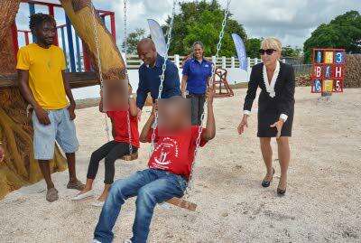

Clarendon · Jamaica · 2015
York Town Basic School
Sculptural play environment · Recycled materials

The project
A place
to play.
Created by Scheed Cole for York Town Basic School in Clarendon, this playground was donated by the JPS Foundation and officially opened on 10 December 2015.
Climbing structures, swings and play equipment incorporate recycled materials shaped to resemble natural logs. The space served more than 50 children and supported the school’s efforts to meet Early Childhood Commission standards.
Client / donor: JPS Foundation
Materials: Recycled materials
Opened: 10 December 2015